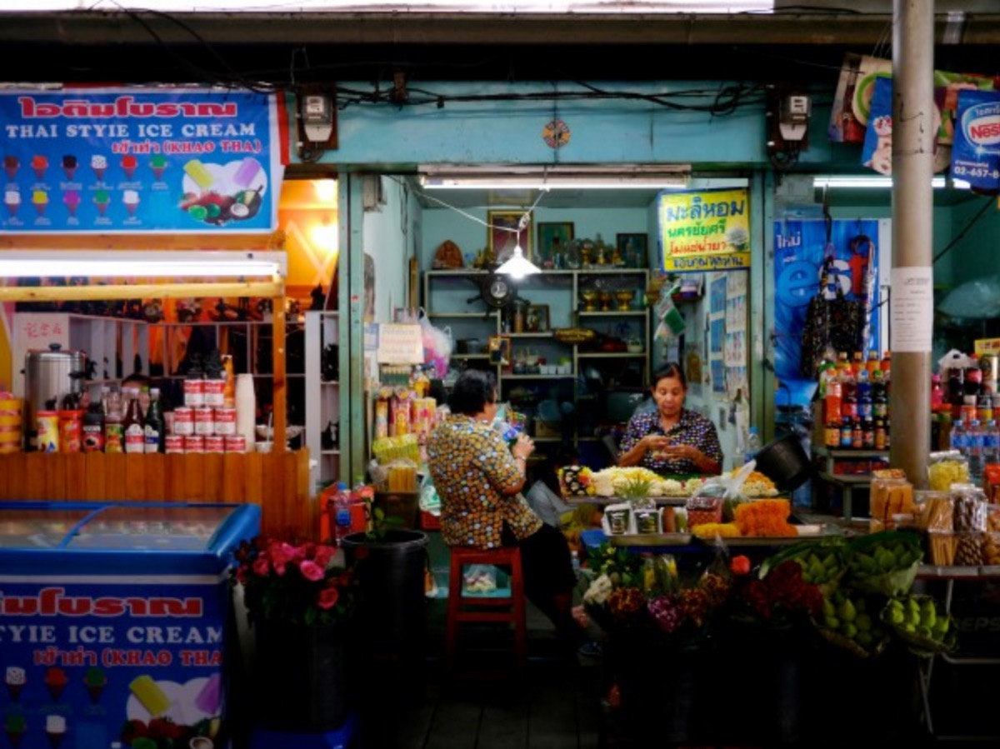
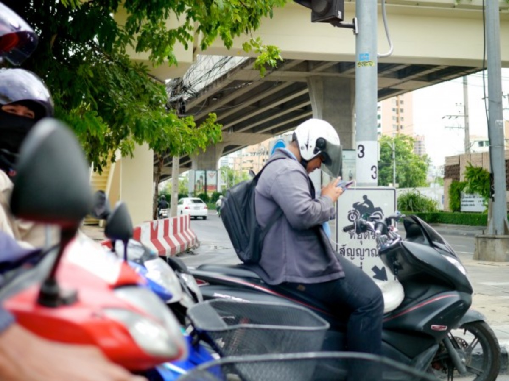
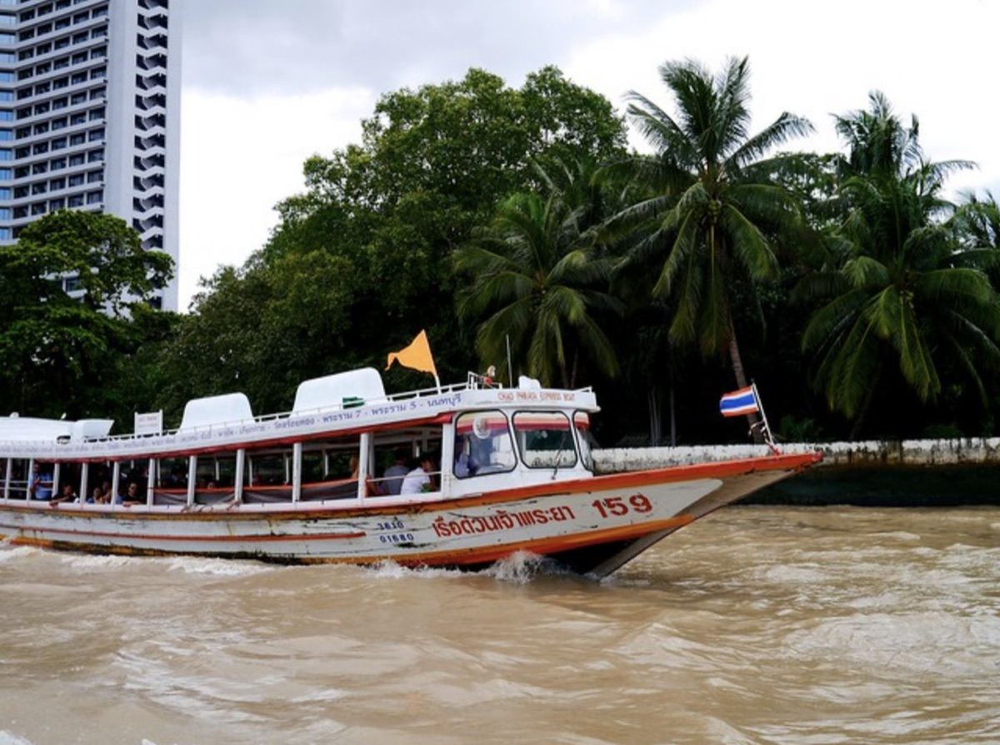

Firefox Research in Thailand

In August and September, the Mozilla User Experience Research Team visited Thailand and Indonesia to conduct Firefox qualitative research. The goal of this research project was to understand how people in these markets experience the Internet and to learn about emerging trends that will provide insight into new and current product features. If you would like to learn more about the project planning phase of this study, please read the first post in this series. The fieldwork teams will be dedicating the end of September to the thorough analysis of our findings. In the meantime, we are excited to share five initial observations from our Thailand fieldwork.
The Mozilla research team, along with our partner SonicRim, interviewed 22 participants in 11 sessions over a two week period in Bangkok and Chiang Mai, Thailand. We also had the opportunity to explore cultural sights, public transportation, new and second-hand electronics stores, public spaces, Internet cafes, and universities.
Transportation
The transportation options in Thai cities are seemingly endless - everything from motor bikes and tuk tuks for hire to public boats and trains. In Bangkok, the congestion is also seemingly endless, with an average road speed of less than 10 mph.Perhaps as a result of these long commutes, mobile devices are popular and prevalent on all types of transportation. In fact, Thailand has a mobile phone penetration rate of 120%, which means there are more mobile phones in use than there are people.

Smartphones
While basic feature phones are still the most common mobile device in Thailand, smartphone sales have more than doubled in the last two years.3 The latest high-end phones (Samsung, Apple, Nexus) are very popular, though cheaper models, used devices, and knock-offs are also abundant. Mobile phones are routinely sold unlocked in Thailand, which makes it easier to sell used devices or upgrade to the latest technology.
Internet Access
The Thai government has committed 30 billion baht (US$0.94 billion) to its "Smart Thailand" initiative in an effort to connect 85% of the country to high-speed broadband by 2015.4 The government has also partnered with major telecom providers to install more than 120,000 free wifi access points in Bangkok.5 And in May of this year, 20 Thai provinces received the nation's first true 3G service.6 Yet, even with this huge investment in infrastructure, connection speed, price, and availability continued to be major issues for the Thai people we interviewed.

Hardware and Software Purchases
Unlicensed software bundles are prevalent in both ad-hoc mall kiosks and more formal stores. As a result, most people have the latest OS and software. It is common for people to buy computers with no operating system installed and buy a package of basic, unlicensed software directly from the salesperson. A typical package included Windows 7, MS Office, Adobe CS 5, antivirus, YouTube Downloader, and multiple browsers (Chrome, Firefox, and IE) for 600 baht (US$20). In contrast, a licensed copy of Windows 8 would cost the consumer 5000 baht (US$130). Similarly, unlicensed smartphone app bundles were also available.
Personal Recommendations
Our research indicates that Thai people are more concerned with ease of use, familiarity, and personal recommendations when it comes to technology than they are with brand loyalty. When asked why they were using a particular piece of software, the overwhelming majority said it had been recommended and installed by the person who sold them their device, or it had been recommended by a friend or family member. Personal research or brand recognition did not appear to be factors for most Thai consumers.
Next in this series: The Internet and Browsing in Indonesia: Five Findings from the Field
References: